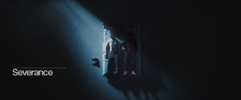

Summery:
“
"Severance" is an American science fiction psychological thriller television series created by Dan
Erickson and directed by Ben Stiller and Aoife McArdle. It stars
Adam Scott, Zach Cherry, Britt Lower, Tramell Tillman, Jen Tullock, Dichen Lachman, Michael Chernus, John
Turturro, Christopher Walken, and Patricia Arquette. The plot follows Mark (Scott), an employee of
Lumon Industries who agrees to a "severance" program in which his non-work memories are separated from his work
memories.
|
 |